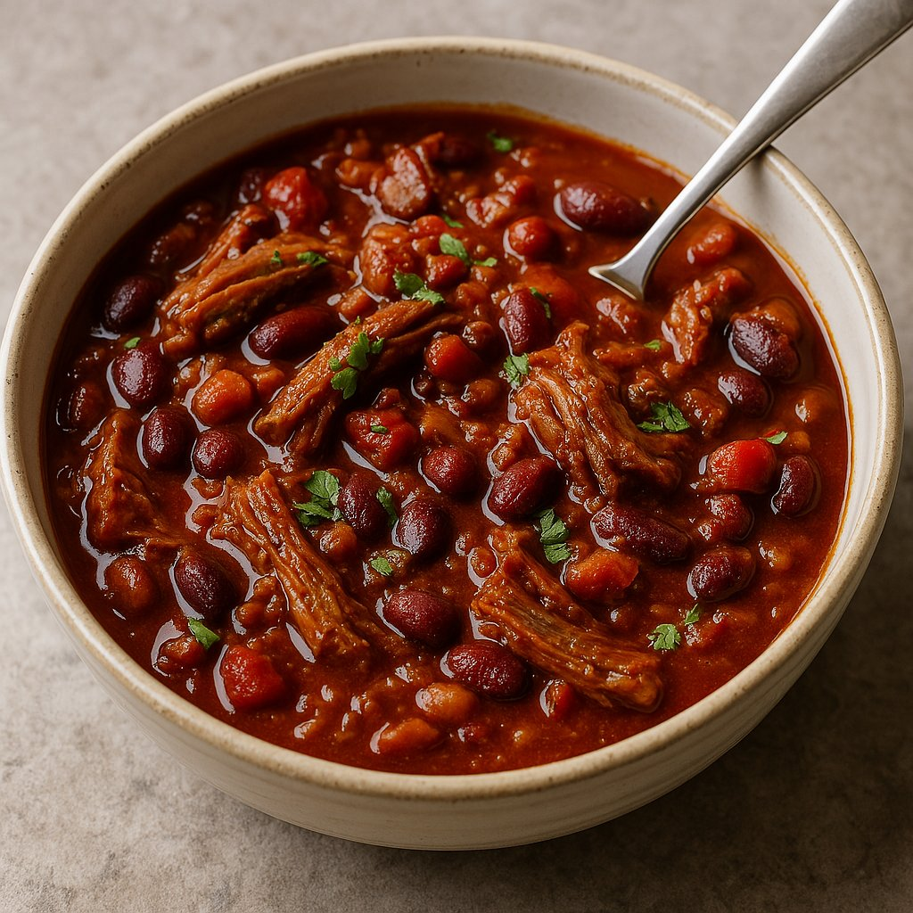

Brisket Chili

Description
This brisket chili is a bold, smoky twist on a cold-weather favorite.
Instead of the usual ground beef, it features slow-cooked, tender chunks of brisket that melt in your mouth and bring a deep,
meaty richness to every bite. The chili simmers with fire-roasted tomatoes, hearty beans,
and a blend of spices like cumin, smoked paprika, and a touch of chipotle for heat.
The result is a thick, flavorful stew with just the right balance of spice, sweetness, and smokiness.
Perfect for game day, potlucks, or a cozy dinner, this brisket chili is even better the next day as the flavors continue to develop.
Top it with sharp cheddar, a dollop of sour cream, or fresh cilantro, and serve it with cornbread or crusty bread on the side.
It’s a satisfying, comforting dish that elevates classic chili into something truly memorable.
Ingredients
- 2 lbs brisket, cut into 1-inch cubes
- 1 onion, chopped
- 2 cloves garlic, minced
- 1 can (28 oz) fire-roasted diced tomatoes
- 2 cans (15 oz each) kidney beans, drained and rinsed
- 1 can (15 oz) black beans, drained and rinsed
- 2 cups beef broth
- 2 tbsp chili powder
- 1 tsp cumin
- 1 tsp smoked paprika
- 1/2 tsp chipotle powder (optional)
- Salt and pepper to taste
- 2 tbsp olive oil
- 1 bell pepper, chopped
- 1 tsp dried oregano
- 1 tbsp Worcestershire sauce
Steps
- In a large pot or Dutch oven, heat the olive oil over medium-high heat. Add the brisket cubes and brown on all sides. Remove and set aside.
- Add the onion and bell pepper to the pot. Sauté until softened, about 5 minutes.
- Add the garlic and cook for another minute.
- Stir in the chili powder, cumin, smoked paprika, chipotle powder, and oregano. Cook for 1-2 minutes until fragrant.
- Add the browned brisket back to the pot, along with the fire-roasted tomatoes, kidney beans, black lsbeans, beef broth, Worcestershire sauce, salt, and pepper.
- Bring to a simmer, then reduce the heat to low. Cover and cook for 2-3 hours, or until the brisket is tender and the flavors have melded.
- Adjust seasoning to taste. If the chili is too thick, add more beef broth or water to reach your desired consistency.
- Serve hot, topped with shredded cheese, sour cream, or fresh cilantro if desired.
- Pair with cornbread or crusty bread for a complete meal.
- Enjoy your hearty and flavorful brisket chili!